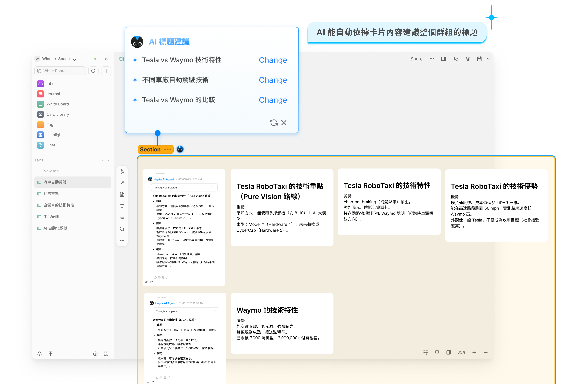
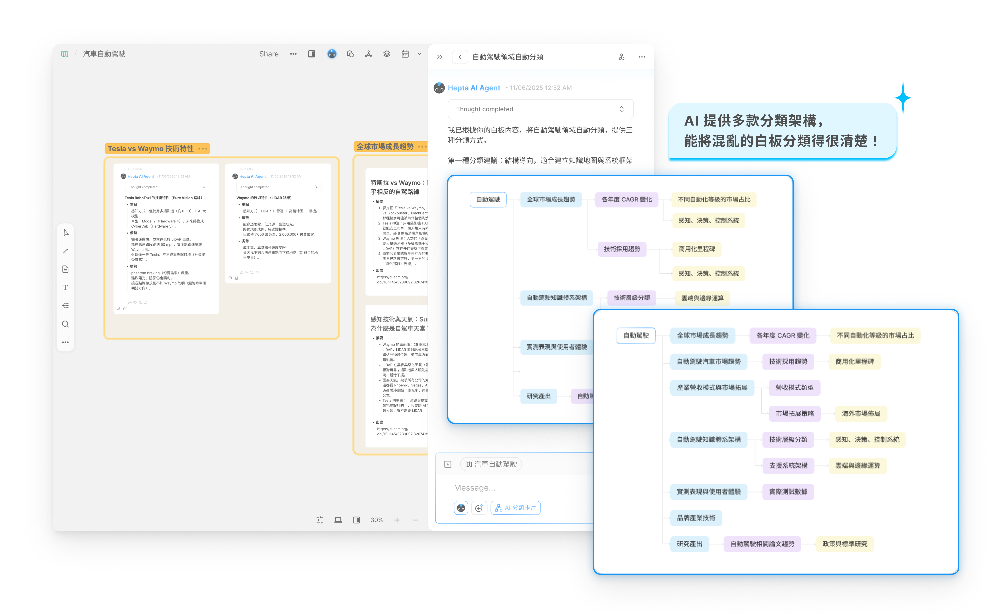
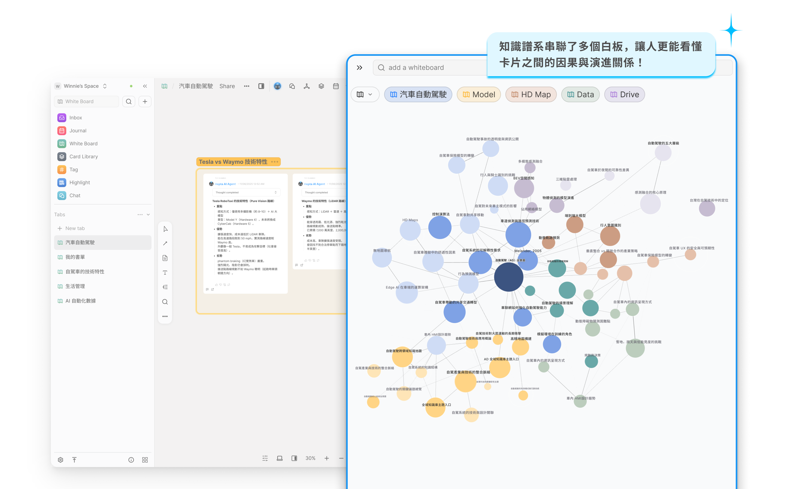
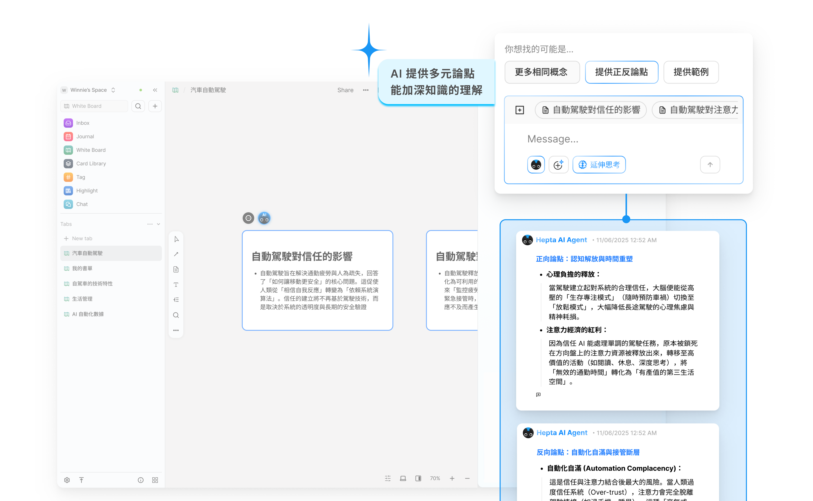
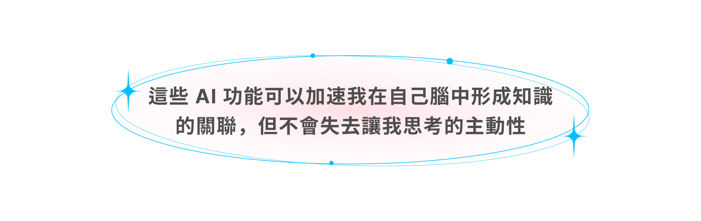

Heptabase
設計體驗流暢的 AI Agent，幫助使用者學習及研究複雜主題

Heptabase
團隊成員
UXUI 設計師 6 位 （不同產業與專長）
參與項目
問卷調查、使用者訪談、User Flow、Mockup、易用性測試
時間
2025.10 — 2025.12（七週）
專案背景
為了提升 End to End 產品設計過程中各項能力，決定參加 AAPD 產品設計挑戰賽，用設計解決真實企業命題。我們選擇企業主 Heptabase 的題目：「設計體驗流暢且符合使用情境的 AI Agent，幫助使用者完成對學習及研究複雜主題的任務」，最後在七週內完成使用者研究並提出完整功能提案。
第三屆 AAPD 產品設計挑戰賽合作企業
Heptabase 是一款視覺化知識管理工具，透過卡片與白板幫助使用者拆解、連結並理解複雜主題，建立個人化的知識系統

How Might We
設計體驗流暢且符合使用情境的 AI Agent，幫助使用者完成對學習及研究複雜主題的任務
成果亮點
整合串聯、分類、知識譜系、延伸與回顧等五大 AI 能力，協助使用者快速形成知識脈絡，並保持思考主動性

評審這麼說：
企業主這麼說：

定義問題
透過 UX 設計流程與簡單探索性研究，組內拆解出四個值得深入探索的方向。

研究目標
競品分析
Heptabase 多項功能都著重於使用者探索收集思考階段，但發現與競品分析作比較時，還有許多地方是能在做深化的地方

問卷調查
針對正在研究或學習某主題，且研究頻率為每週 3 次以上的使用者展開問卷調查，雖有限時間內只收集到 12 份有效問卷，但仍從問卷資料中得出兩大方向。

使用者訪談
我們找了 9 位受訪者，學習研究頻率為每週 3 次以上，且身分屬於各種領域的使用者來深入訪談。

透過競品分析、問卷調查、深度訪談等前期的研究，我們重新聚焦定義了企業的 HMW，收斂出屬於我們團隊更精準的版本

洞察分析
洞察一：知識週期加入回顧階段更通透使用體驗
透過文獻了解到「知識週期」是做為深度理解的一個循環，總共分為五個流程：包括探索、收集、思考、創作、分享。 此週期同時在 Heptabase 創辦人 Alan 的文章中有分享到，多項文獻也有將此週期應用在學習模型中。
而第一個洞察是在知識週期還會有一個回顧階段。作為重新理解的契機點，讓使用者再次找回被遺忘的重要知識；並且讓創作更全面，整合不同時期的思考，使創作輸出更完整、有深度。

洞察二：研究型是學習型的進階版本，兩者有高度共同處
我們發現在學習複雜研究主題時，會分為學習與研究兩個場景。經過訪談與研究發現，其實此兩種情境會有高度重疊之處，而研究情境其實也算是學習型的一種，只是在創作階段需要更有深度更嚴謹的輸出

設計策略
我們發現研究型其實是學習型的強化版本，因此抓住學習型，就能同時涵蓋研究型的深度需求。且學習型的使用情境更普遍、族群更大，更多訂閱誘因。

我們將訪談洞察，整理並放入顧客旅程地圖中進行分析。而我們主要聚焦在收集、思考、回顧三個階段。 原因是從競品分析、問卷與訪談結果中可以看到使用者的主要任務與痛點，都高度集中在這三個流程。

而針對這三個階段所找到的痛點，分別想了三個面向的設計方向。包括 AI 可以辨識資訊主題給予拆解與關聯，以及補足邏輯脈絡缺口和情境式搜尋等設計方向。

設計解法
在眾多設計解法中，團隊以影響力、可行性與商業目標來篩選出最終的解決方案。最後提出五種解法，延伸成為我們的 AI Agent 的功能。

功能一

功能二

功能三

功能四

功能五

易用性測試
上述確定的 AI 功能是經過易用性測試，透過線上質化訪談四位 heptabase 使用者，驗證 5 種 AI Agent 功能有滿足使用者需求以及體驗流暢度。
功能二迭代

功能三迭代

功能四迭代

透過易用性測試，不只讓功能提案切中使用者需求，也讓我們發現一個使用者很在乎的事情：

商業指標

團隊影響力
真的覺得很幸運遇到非常棒的組員，大家在各自專精的領域做到最好，擔任該項目領導的角色；在比較不熟悉的部分也非常積極協助與合作，一起很精彩地完成這次的挑戰賽。 跨職能合作的重點在於發揮個人的能力。如何運用彼此的強項，並且有這樣的團隊氛圍讓大家發揮所長，我覺得也是非常重要的一部分。就像 F1 Mercedes 領隊 Toto 說的，他的價值是制定出一個框架，讓所有人可以在對的位置發揮自己的才能，才能讓團隊贏得總冠軍一樣。
非常感謝團隊成員！